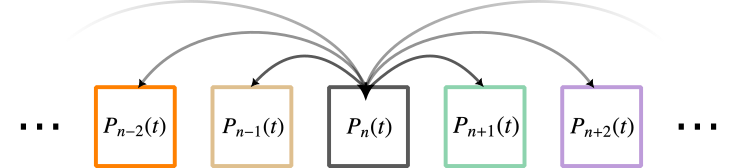

Master equations
Contents
Master equations#
In this tutorial, we hope to track the evolution of the probability of finding a system in any of its available discrete states. As complex systems are often composed of ensemble of agents or parts, this tool will prove to be a powerful way of tracking their dynamics. It allows you to follow the distribution of possible compositions of the system over time, rather than simply following the average behavior of the system as is common in traditional mean-field approaches. Predator-prey dynamics, birth–death processes, and disease models on networks are only a few of the many applications unlocked by the tools covered in this tutorial.
A random discrete variable is completly described by its probability distribution \(\lbrace P_n\rbrace_{n = 0}^\infty\) over its set of possible states \(n\). If that random discrete variable describes the behavior of a complex systems of interest, any tool that allows us to track its distribution through time \(\lbrace P_n(t)\rbrace_{n = 0}^\infty\) will prove invaluable. This is the objective of master equations. These are sets of differential equations describing the flows of probabilities associated with any state transitions of a system. As such, these are dynamical systems that respect basic properties of probabilities distributions
In this system of differential equations, every \(dP_n(t)/dt\) captures all flows of probability density in and out of a given state \(P_n(t)\) in exchange with all other states \(m\neq n\). To make these flows more explicit, one can think of \(dP_n(t)/dt\) as the sum of probability currents \(J_{n,m}\) between pairs of states. These currents can be broken down into their flows in both directions and summed up to create master equations, like so:
You can visualize the system around a given state a bit like you would a regular compartmental model, but here compartments refer to states of the entire system.

The boxes here correspond to the states the system can take, and the probability density \(P_n(t)\) for state \(n\) is called an occupation number. It might be useful to imagine that we are modeling an infinite amount of equivalent but independent systems, and asking in what fraction \(P_n(t)\) of this infinite multiverse can I find the system in a given state \(n\) at time \(t\).
This schematic shares a lot with classic compartmental models, but these approaches differ conceptually in one important way. Compartmental models often separate systems into their different types of parts and put those parts in boxes. Master equations separate a multiverse of systems into their different states and put systems in boxes. While we cannot reconstruct a system exactly from a compartmental models because of correlations between parts, master equations do not have that problem since they track the exact state of a system. To do so, master equations require a lot more equations than most compartmental models.
To model any system with master equations, we must therefore answer the following questions. What is the set of discrete states available to the system? What are the possible transitions between states? At what rates do these transitions occur?
A simple example: Birth-death process#
Imagine that we care about the exact amount of some particles that are created at a constant rate \(\mu\) out of a reservoir but can disappear at another constant rate \(\nu\). This process is straightforward to model in terms of the average number of active particles at any given time, but almost useless. What if we care about how often particle go extinct? Or how often they reach some critical number of particles? To answer these questions, we need master equations.
What is the set of discrete states available to the system? The system consists of a discrete number \(n\) of active particles which can take any value from 0 to infinity.
What are the possible transitions between states? The system will go from state \(n\) to state \(n+1\) when a new particle is created, and from state \(n>0\) to state \(n-1\) when a particle disappears.
At what rates do these transitions occur? \(J_{n\rightarrow n+1} = \mu\) and \(J_{n>0\rightarrow n-1} = n\nu\). All other transitions are impossible (null current equal to zero).
The master equations are therefore, for any number of particles (i.e., system state) \(n\) \(\in \lbrace 0,1,2,\ldots\rbrace\)
There are a few standard ways of solving these equations and we will cover the two main approaches. First, we can computationally integrate the system of differential equations to track the distribution of states over time. This always works and is therefore the most common approach in research. For some systems however, a second approach can be used to get a more explicit solution: we can attempt to solve the system by finding a probability generating function describing the probability distribution \(\lbrace P_n \rbrace\). We will cover both in what comes next!